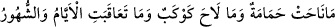

şiddetten kinâye yaptılar. Âyette yer alan ve gün anlamına gelen “yevm”in, çocukları ak
saçlı ihtiyar yapması, o günün şiddetli bir gün olması demektir. Bir hadiste şöyle
buyurulmuştur: “Allah Teâlâ kıyâmet günü, Ey Âdem! der.” Bu hitâba özel olarak
Âdem’in muhatap olması onun bütün insanların aslı olmasından dolayıdır. “Âdem cevap
verir: Lebbeyk (buyur) her emrine hazırım bütün hayırlar senin elindedir, der. Allah:
Cehennem ehlini çıkar gönder buyurur. Âdem sorar: “Cehennem ehlinin sayısı kaçtır.
Allah Teâlâ: Her bin kişiden dokuzyüzdoksandokuz kişi cehennemliktir buyurur.
Peygamber (s.a.) devamla şöyle der: “İşte o çocuğun ihtiyarladığı ve her hâmile
kadının çocuğunu düşüreceği zamandır”. [162]
İbnu’l-Melek şöyle diyor: Bil ki saçın ağarması ve doğum olayları -âyette anlatıldığı
gibi- zâhirî üzerine anlaşılmamalıdır. Çünkü o gün ne hâmilelik olacaktır ve ne de
küçük çocuk bulunacaktır. Şu hâlde burada geçen ifâdeler kıyâmet gününün çok korkunç
olduğunun kinâye yoluyla anlatımından ibârettir. Bu âyetlerin anlamı şudur: Eğer o gün
hâmile kadın ve çocukların bulunacağı varsayılacak olursa hâmileler -o günün
korkunçluğundan- çocuklarını doğururlar. Çocuklar da birer ak saçlı ihtiyar olurlardı.
İbnu’l-Melek’in bu açıklaması tartışmaya uygun bir açıklamadır. Nitekim üçüncü şıkta
buna işâret olunacaktır. Peygamber (s.a.) daha sonra şu âyeti okudu: “İnsanları da -
korkudan- sarhoş bir hâlde görürsün oysa onlar şaraptan sarhoş değillerdir fakat
Allah’ın azâbı çok dehşetlidir.” (el-Hac, 22/2)
3- Bu âyet-i kerîmede yer alan “çocukların ak saçlı ihtiyarlar hâline getirilmesi”
ifâdesi faraziyeden ibârettir. Buna göre âyetin mânâsı şudur: Kıyâmet günü öyle bir
hâlde karşımıza çıkacaktır ki eğer o gün bir çocuk bulunsa kıyâmetin korkusu ve
dehşetinden saçları bembeyaz olacaktır. Bu açıklama tarzı -her ne kadar tefsir
âlimlerinin önde gelenlerinden sayılan bâzı müfessirlerin kanâati ise de- bize göre
yerinde değildir. Çünkü böyle bir açıklama kıyâmet günü gerçekten çocukların
olmayacağı bir gün izlenimini doğuruyor. Oysa sâbittir ki dünya hayatında iken çocuk
olarak ölmüş birçok çocuk, o gün dirilecektir. Yine sâbit hususlardandır ki hâmile
kadınlar hâmile olarak dirileceklerdir. O gün hem hâmile kadınlar olacak, hem de küçük
çocuklar bulunacaktır. Evet, bu zümre cennete girdiklerinde otuzüç yaşında birer
delikanlı olarak cennete gireceklerdir.
4- Âyetin ifâdesi o günün uzunluğunu vasfeden bir ifâde olabilir. Bu ifâde kinâye
yoluyla o günün uzunluğunu vurgulamış olabilir. Şöyle ki; o gün öyle uzun bir gün olur
ki çocuklar o gün beklemekten ihtiyarlığın ilk günlerine varmış ve saçları ağaracak çağa
gelmiş olurlar. O gün hâlâ bitmemiş olur. Tam tersine o kadar uzar ki mikdarı ellibin
seneye ulaşır. Bu süre o günün ne kadar uzun bir gün olduğunun kinâye yoluyla
anlatımıdır. Yoksa “ellibin yıl” ifâdesi gerçek bir süre anlatımı değildir. Şunu demek
istiyoruz: Bu ifâde Arapların misal verme yoluyla uzunluk anlatımı âdetlerindendir.
Nitekim Araplar ebedîliği ve sürenin sonsuzluğunu şu ifâde ile dile getirirler: “
/Hiçbir güvercin ötmedi, hiçbir yıldız